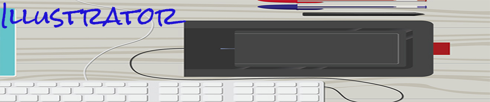

Vector Project

Vector Project
In this project, I added a Koi Japanise fish to my raster image. I though, adding a Koi or more specifically nishikigoi (in Japanese), would add color to the pound and it will decor the outdoor water lilies gardens . Koi is an informal group of the colored variants of C. carpio. The pound is from French inspiration and after I saw the exbition at De Young Museum.
Click here for more information about Koi
Click here for more information about Water Lilies
Home |
Raster graphic|
Vector |
Timebase |
PrintLayout|
Contact